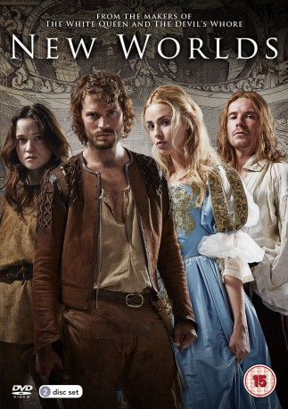

")
 
 IMDB-Wertung: 6.5 / 10
IMDB-Wertung: 6.5 / 10  Metascore:
Metascore: 
England im 17. Jahrhundert: Nach einem blutigen Bürgerkrieg hat Karl II. wieder den Thron bestiegen. Mit harter Hand regiert der Tyrann sein Reich und unterdrückt alle Andersdenkenden. Wie viele andere begehren auch vier junge Menschen gegen das Unrecht auf und wagen die Flucht in die Neue Welt. Doch der lange Arm des Despoten reicht bis in die amerikanischen Kolonien. Und auch die neue Heimat selbst ist ein Pulverfass, denn einige gierige Siedler begehren die alten Schätze der Ureinwohner.Die vierteilige Mini-Serie ist eine faszinierende und bildgewaltige Reise an den Rand der Zivilisation und in neue Welten. Neben Jamie Dornan mit Freya Mavor, Alice Englert und Joe Dempsie hochkarätig besetzt.
Jahr: 2014
Dauer: 186 Minuten
FSK: 12
Land: England Studio: PowerTonspuren: DTS - ,
Untertitel: Deutsch,
Auflösung: 1080p (1920x776) Größe: 7045 MB
Genre: Drama, Krieg, Geschichte, TV-Serie
Regisseur: Charles Martin
Drehbuch: Martine Brant, Peter Flannery
Soundtrack:
Darsteller:
 Jamie Dornan als Abe Goffe, 4 episodes, 2014
Jamie Dornan als Abe Goffe, 4 episodes, 2014 Michael Maloney als Hardwick, 4 episodes, 2014
Michael Maloney als Hardwick, 4 episodes, 2014 Freya Mavor als Beth Fanshawe, 4 episodes, 2014
Freya Mavor als Beth Fanshawe, 4 episodes, 2014 Jeremy Northam als Charles II, 4 episodes, 2014
Jeremy Northam als Charles II, 4 episodes, 2014 Amy Marston als Martha Hawkins, 3 episodes, 2014
Amy Marston als Martha Hawkins, 3 episodes, 2014 Michael McElhatton als John Hawkins, 3 episodes, 2014
Michael McElhatton als John Hawkins, 3 episodes, 2014 Morfydd Clark als Amelia, 2 episodes, 2014
Morfydd Clark als Amelia, 2 episodes, 2014 Bill Fellows als Busby, 2 episodes, 2014
Bill Fellows als Busby, 2 episodes, 2014 Rupert Holliday-Evans als Thomas, 2 episodes, 2014
Rupert Holliday-Evans als Thomas, 2 episodes, 2014 Ralph Ineson als Stackpole, 2 episodes, 2014
Ralph Ineson als Stackpole, 2 episodes, 2014 Patrick Malahide als John Francis, 2 episodes, 2014
Patrick Malahide als John Francis, 2 episodes, 2014 Alex Meraz als Masca, 2 episodes, 2014
Alex Meraz als Masca, 2 episodes, 2014 Donald Sumpter als Sidney, 2 episodes, 2014
Donald Sumpter als Sidney, 2 episodes, 2014 Andrew Woodall als Shaftesbury, 2 episodes, 2014
Andrew Woodall als Shaftesbury, 2 episodes, 2014 Josef Altin als Latham, 1 episode, 2014
Josef Altin als Latham, 1 episode, 2014 James Cosmo als Goffe, 1 episode, 2014
James Cosmo als Goffe, 1 episode, 2014 Sarah Finigan als Abigail, 1 episode, 2014
Sarah Finigan als Abigail, 1 episode, 2014 Michael Fox als Luke, 1 episode, 2014
Michael Fox als Luke, 1 episode, 2014 Stanley Townsend als Colonel Blood, 1 episode, 2014
Stanley Townsend als Colonel Blood, 1 episode, 2014 Jake Curran als Clerk, unknown episodes
Jake Curran als Clerk, unknown episodes James McArdle als Will Blood, 2 episodes, 2014
James McArdle als Will Blood, 2 episodes, 2014Datei: X:\2014(N-Z)\New Worlds (2014, FSK12, 1920x776).mkv seit 05.01.2019
Festplatte: HD 2013(I-Z)-2014(A-Z)
 Es gibt insgesamt 163 Filme in der Gruppe '2014(N-Z)'
Es gibt insgesamt 163 Filme in der Gruppe '2014(N-Z)'